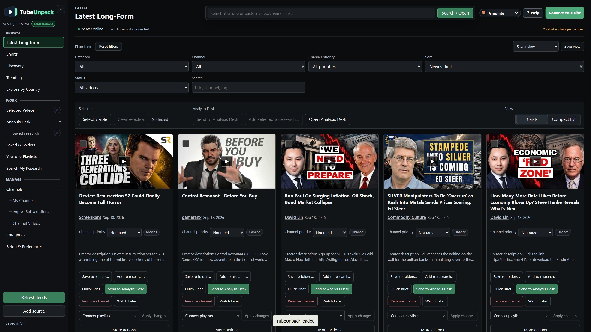
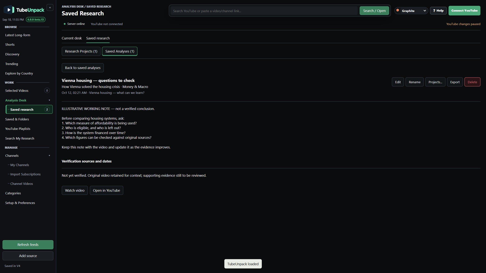

KEEP A VIDEO
Saved & Folders
Save video references for later and arrange them in local folders. This does not change your YouTube playlists.
YOUR SOURCES. YOUR QUESTIONS.
Organize the channels you follow, examine videos with the transcript beside you, and keep the research worth returning to.
Windows 10/11 · 64-bit
Runs locally. Opens in your browser.

PRIVATE BETA For invited testers. Google-connected features require an eligible invited account.
Beta.13 detailsFROM A FEED TO A RESEARCH TRAIL
Four connected steps, shown inside the real application.
01 ORGANIZE YOUR SOURCES
Put related channels into topics such as Finance, Science or Technology. Open a category to see their latest videos together.
Import all your subscriptions or choose the channels you want. Use suggested categories or make your own.
Earlier development capture. Layout differs from beta.13.
Open a full-size frame ↗02 WATCH WITH CONTEXT
Play a video inside TubeUnpack and read its available transcript alongside it. Click a timestamp to revisit the moment you want to examine.
Captions depend on availability. Some videos must be watched on YouTube.
Earlier development capture. Playback is muted in this demonstration.
Open a full-size frame ↗03 GO BEYOND THE SUMMARY
Analysis Desk prepares a transcript with a Simple or Deep prompt. Take the material to your preferred AI assistant to examine the argument, evidence and unanswered questions.
Follow up on what interests you. Bring useful responses back into TubeUnpack when you want to keep them.
Copy a prompt and transcript.
Use your chosen assistant.
Ask follow-up questions.
Verify important claims independently.
Earlier development capture showing two alternative routes. Example response, not a verified conclusion.
The full analysis guide →04 KEEP THE USEFUL WORK
Keep a video for later, build an investigation, or save a useful response. Each has a clear home.
Research Projects and Saved Analyses are the two tabs in Saved Research. Your video folders stay separate.
KEEP A VIDEO
Save video references for later and arrange them in local folders. This does not change your YouTube playlists.
KEEP AN INVESTIGATION
Group videos around a question. Keep your notes and verification sources together, and add more material as you go.
KEEP A RESPONSE
Name, find, edit or export a response you manually save—even after its video leaves the desk or its project is deleted.
Paste it into Save analysis result, give it a name and save. Find it again in Saved Research → Saved Analyses.
Watch it happen in beta.13: save, leave, return ↗
One editable response is stored per video. Export it before replacing it if you need a separate version.
A named working note stays linked to its original video, with controls to edit, rename, manage projects or export.

Actual beta.13 · Manually entered demonstration note.
Open full-size ↗Earlier research-project interface. This clip does not show beta.13's new Saved Analyses tab.
Projects, analyses or folders? →ROOM TO FOLLOW THE QUESTION
Search wider YouTube, explore countries and browse a channel's indexed history. Bring other perspectives into your investigation.
Prepare selected videos' transcripts and prompts as one package for your assistant. Caption availability and the provider's input limits still apply.
Export research or make a backup. Choose a local file or separately connect your own Google Drive.
A CLEAR NEXT STEP
Practical guides for the invited beta.
Start with one topic and one video.
Open the app, review Google permissions and choose your channels.
THE AI HANDOFFUse prompts and transcripts with your preferred assistant.
YOUR WORKING LIBRARYUnderstand projects, saved analyses and video folders.
YOUR DATA, EXPLAINEDWhat stays on your computer, what connects and what to back up.
Earlier Source Watch walkthrough · 12:08 · English narration and subtitles. The core workflow is useful, but the name, player and newer controls differ from beta.13.
Watch the historical guide on YouTube ↗Download English subtitlesThe four silent inline demonstrations use actual 1440p development captures, with shortened waits and text entry. Research filming used an isolated profile without account details. Money & Macro, Bloomberg Originals, euronews and the other example creators are not affiliated with TubeUnpack. The Analysis clip contains two alternative handoffs; only the first shows a submitted prompt and response.
FOR INVITED WINDOWS TESTERS
Install TubeUnpack, connect your invited Google account and bring in the channels you want to follow.
4.0.0-beta.13 · Built 5 October 2026
Unsigned private-beta candidate. This design preview is not approved for unrestricted public distribution. Google-connected features require an eligible invited account.
TubeUnpack-4.0.0-beta.13-windows-x64-setup.exe
Exact size: 24,134,897 bytes
SHA-256:
0e2e10b85c9bede2f07bfb01cf2a973a3c231d21e3b3cbc927dedea3f64e5c69A matching hash identifies the supplied file; it is not a safety certification or Windows code signing.
Download checksumWindows may show an unknown-publisher or reputation warning because this candidate is unsigned. Verify the source and version with the person who invited you. Do not disable Windows protections.
The connected workflow requests viewing and management access to YouTube. It is not a read-only integration; supported account changes require deliberate actions.
A new clean-VM installation and fresh live Google sign-in remain separate acceptance checks. No separate Python installation or terminal is required.
YOUR WORK, YOUR CHOICES
Sources, video references, notes, cached transcripts and research are stored on your computer by default. Backup encryption does not encrypt these working files.
Google and YouTube provide connected services and playback. You choose what to send to an AI assistant; that service handles it under its own settings. Google Drive backup is a separate choice.